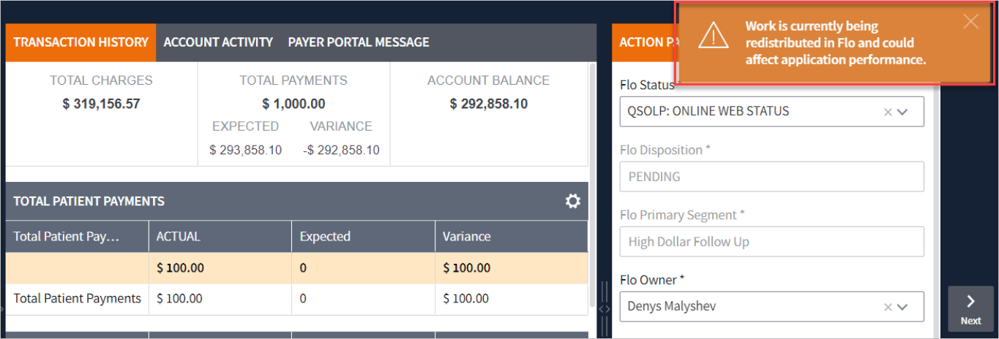
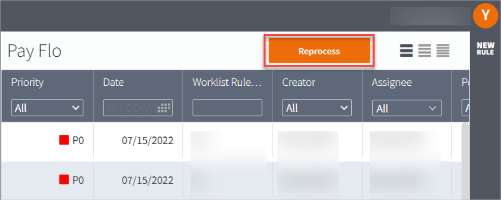

Quick Start Guide
- Open Flo Panel.
- Select Segments.
- Access Worklists.

- Select items in the worklist.
- Open Action Panel to take action.

Standard Fields Description Flo Disposition and Status These values are specific to individual customer. Set Assignee Typically populated with current assignee name but can be assigned to another person within the same Flo team. Flo Note Specify the important information which relevant to the account. Flo Timer The timer removes the account for a set number of days. - Click Save. Now account either moves to another segment or temporarily disappears
from the worklist according to the timers setting.
For more information, refer to the below sections.
Showing Rules Reprocessing Notifications
This feature allows users to see notifications about rules reprocessing in all opened tabs including Summary Card View and Forms.

These notifications are displayed in Card View as soon as a user clicks Reprocess in the Flo Rules grid.

We hope you enjoy the new improvements!
You can always let VisiQuate know your feedback at support@visiquate.com.
- Click Save. Now account either moves to another segment or temporarily disappears
from the worklist according to the timers setting.